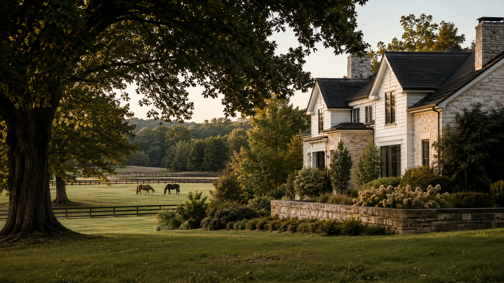

Homes & Residential
A move that fits your real life
From first homes and family homes to historic properties and city neighborhoods.
Explore →Buying or selling real estate is about more than a property—it’s about what comes next.
I help buyers and sellers across west-central and central Illinois navigate that next move with local knowledge, thoughtful guidance, and a personal approach. From homes in town and country acreage to farms, land, estates, and equestrian properties, every property deserves a strategy that fits the people and the place.
Buying • Selling • Residential • Farm & Land • Estates • Equestrian
A regional real estate
practice
Local understanding. A wider view.
I help with the everyday moves and the extraordinary ones—from a first home in town to a working farm, a business property, a private country estate or a horse property whose details truly matter.
Meet Brenda →Property, understood
Some properties need a different vocabulary—and a different eye. These are the five areas I’m intentionally building my practice around.
Homes & Residential
From first homes and family homes to historic properties and city neighborhoods.
Explore →Farm, Land & Acreage
Working farms, recreational ground, buildable acreage and country homes with room to breathe.
Explore →Commercial & Investment
Commercial buildings, retail, office, mixed-use property, investment real estate and development opportunities.
Explore →Luxury Homes & Estates
Privacy, architecture, craftsmanship, acreage, historic character and exceptional settings.
Explore →Equestrian Property
Pasture, fencing, barns, arenas, turnout, water and access considered as a complete system.
Explore →
For property owners
Every property has a story. The marketing should reflect it.
Whether you’re thinking about selling next month or simply wondering what the path might look like, the best first step is a grounded conversation—without pressure and without assumptions.
Places Brenda serves
From the roads I know by heart to the city markets where I’m deliberately building connections, I serve clients across west-central and central Illinois.
Home Territory
Deep local familiarity and the strongest day-to-day knowledge.
Growth Territory
Small cities, country communities and regional markets connected by real relationships.
Springfield Region
City neighborhoods, executive homes and the rural communities surrounding Illinois’ capital.
Meet Brenda Doolin
I’m a lifelong Schuyler County resident, former business owner, farm girl, horse lover, mother of four and grandmother. I bring more than 25 years of real-world business experience—and I believe people deserve clear answers, honest guidance and room to make their own decisions.
More about Brenda →A conversation is a good place to begin